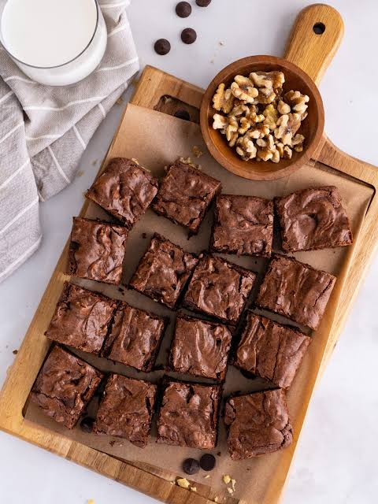

About Chocolate Brownies
Chocolate brownies are a popular baked dessert known for their rich chocolate flavor and soft, chewy texture. They are made with simple ingredients such as chocolate, butter, sugar, eggs, and flour. Brownies can be enjoyed plain or topped with nuts, chocolate chips, powdered sugar, or ice cream. They are perfect for family gatherings, celebrations, or simply satisfying your chocolate cravings.

Recipe Information
| Preparation Time | 15 minutes |
|---|---|
| Baking Time | 25–30 minutes |
| Servings | 9–12 pieces |
| Difficulty | Easy |
Ingredients
- 1/2 cup melted butter
- 1 cup white sugar
- 2 large eggs
- 1 teaspoon vanilla extract
- 1/3 cup unsweetened cocoa powder
- 1/2 cup all-purpose flour
- 1/4 teaspoon salt
- 1/4 teaspoon baking powder
- 1/2 cup chocolate chips (optional)
Cooking Instructions
- Preheat the oven to 175°C (350°F).
- Grease an 8-inch square baking pan or line it with parchment paper.
- In a mixing bowl, combine the melted butter and sugar. Mix until well combined.
- Add the eggs and vanilla extract, then whisk until smooth.
- Add the cocoa powder, flour, salt, and baking powder. Mix until all ingredients are combined. Avoid overmixing.
- Fold in the chocolate chips if desired.
- Pour the brownie batter into the prepared baking pan and spread it evenly.
- Bake for 25–30 minutes or until a toothpick inserted near the center comes out with a few moist crumbs.
- Remove the brownies from the oven and allow them to cool completely.
- Cut into square pieces and serve. Enjoy your homemade chocolate brownies!
Watch How to Make Chocolate Brownies
Watch the video below to learn how to bake delicious homemade chocolate brownies.
Recipe Feedback Form
We would love to hear your thoughts about this chocolate brownies recipe!